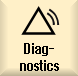
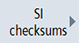
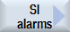
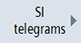
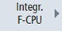
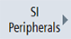

|  | 1. | Select the "Diagnostics" operating area. |
| | 2. | Press the menu forward key and the "Safety" softkey.
The "Safety Integrated diagnostics overview" window is opened. |
| | | |
Calling the diagnostics area: | | Displaying the status of safety drives for Safety Integrated functions |
| | | Press the "SI drives" softkey. The "Status safe drives ..." window is displayed status? |
| | | You can call the following diagnostic views using the softkeys with the same name: Basic functions Extended functions
|
| | | |
Calling the diagnostics area: | ... | Displaying SI checksums |
|  | | Press the "SI checksums" softkey. The "SI checksum overview" window is displayed. |
| | | You can call the following individual checksums using the softkeys with the same name: Global checksums Drive checksums Group signatures
|
| | | |
Calling the diagnostics area: | | Displaying SI alarms |
|  | | Press the "SI alarms " softkey. The "Alarms" window is displayed. |
| | | |
Calling the diagnostics area: | | Displaying SI telegrams |
|  | | Press softkey "SI telegrams". Press the softkey "SIC/SCC". The "SI telegrams PROFIdrive" window is displayed. |
Calling the diagnostics area: | | Display SI Integrated F-PLC |
|  | | Press the softkey "Integr. F-CPU". The "SI Integrated F-PLC" window is displayed. |
| | | |
Calling the diagnostics area: | | Display SI peripherals |
|  | | Press the "SI Peripherals" softkey. The "SI I/Os overview of F modules" window is displayed. |
| | | |
Optional: | | Setting another drive for the diagnostics view |
 ...  | | You can select another drive for the diagnostic views of the drives and the drive checksums: Press the "Drive +" or "Drive -" softkey. The values of the next or the previous drive are displayed in the window. - OR - |
  | | Press the "Select drive" softkey and select the desired drive directly from the displayed list of available drives. This softkey is only visible if there are several drives. Press the "OK" softkey to complete the drive selection. |
| | | |
Optional: | ... | Exiting the diagnostics area |
| | | Proceed as follows to return to the previous diagnostics area: Press the "<<Back" softkey. |